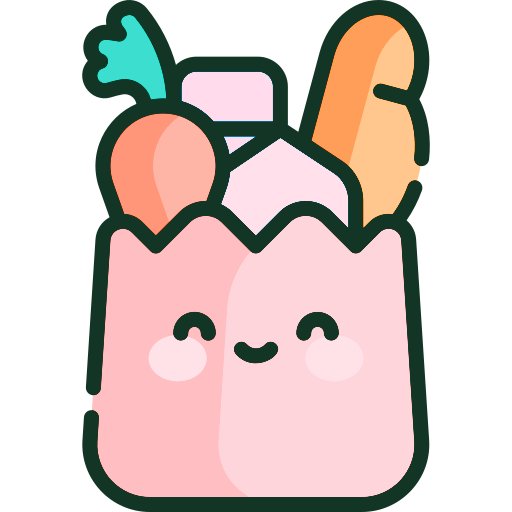
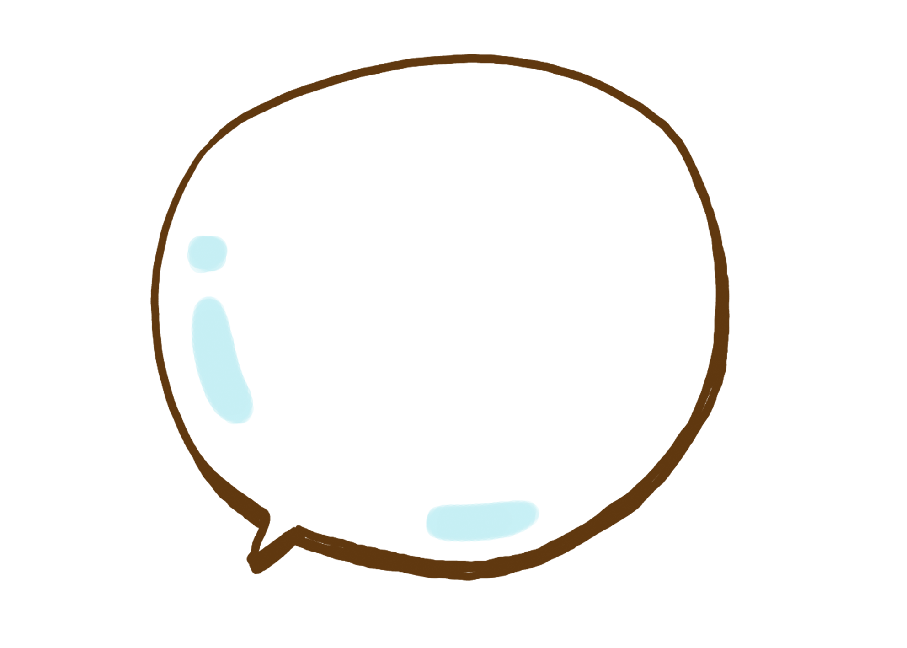

Projects
A gallery of what I've been working on.

Grocery List App
A grocery list app built with React, Vite, and Supabase, featuring custom themes, categorized items with quantities, and filtering. Includes a swipeable "Discover" card game for randomized item suggestions, with a recipe generator (search recipes, auto-import ingredients) in development.
Creatures
An interactive demo using JavaScript's data-set attributes to tag creatures with custom metadata. Clicking "Show Creature Home" changes the background color based on habitat (e.g., green for land, blue for water), while "Show Creature Type" styles borders by species (e.g., solid red for animals, dashed orange for insects)!

AJAX Random Quotes Engine
A dynamic quote generator that pulls attitudinal statements asynchronously from a PHP server. Features custom Google Fonts styling, smooth CSS transitions, and cache-busting mechanics to ensure seamless quote updates.